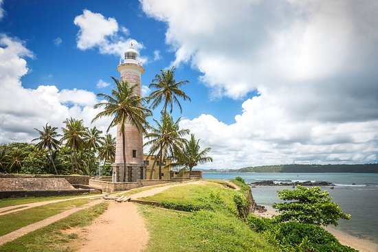

Galle, a coastal gem on the southwestern tip of Sri Lanka, is a captivating blend of history, culture, and natural beauty. Enclosed by centuries-old fortifications, the Galle Fort is a UNESCO World Heritage Site that transports you back in time with its colonial-era architecture, cobblestone streets, and charming boutiques. Beyond the fort's walls, you'll find golden beaches where the turquoise waters of the Indian Ocean invite you to relax and unwind. Explore the vibrant markets, savor delectable seafood, and immerse yourself in the city's rich heritage. Galle is a captivating destination where the past meets the present, offering a truly enchanting experience on the island's sun-kissed coast.